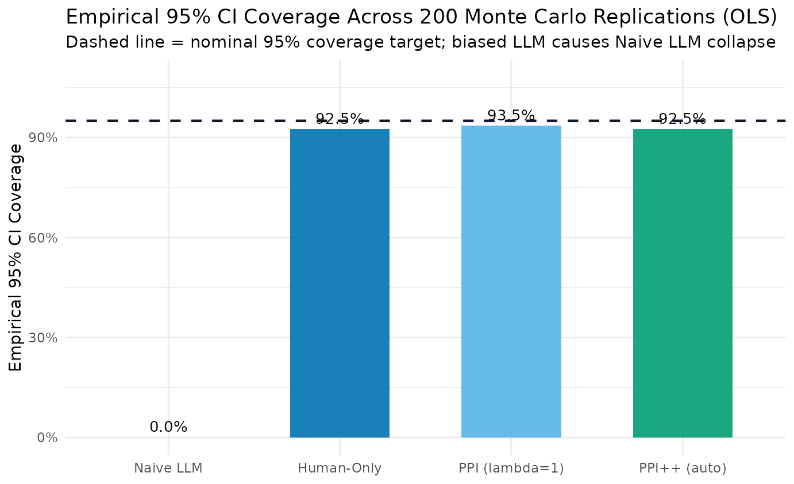

Monte Carlo Coverage Proof: PPI / PPI++ vs. Naive LLM Regressions
Source:vignettes/ppi-coverage-proof.Rmd
ppi-coverage-proof.RmdOverview
A common workflow in computational social science and psychology is to score a large corpus of texts () with an LLM and then fit a regression or multilevel model treating the LLM scores as if they were true human measurements .
Whenever has additive bias, scale attenuation, differential covariate error (DPF), or correlated cluster errors, naive LLM regressions produce:
- biased point estimates, and
- severely anti-conservative confidence intervals whose true coverage collapses far below the nominal 95% level—especially as grows large (making the biased CI even narrower around the wrong value!).
Prediction-Powered Inference (PPI, Angelopoulos et al.,
2023) and Power-Tuned PPI (PPI++, Angelopoulos et al.,
2024) solve this by combining a small human-validated subset
()
with the large LLM-coded corpus
()
via the rectified estimating equation:
with optimal plug-in tuning weight minimizing asymptotic variance.
This vignette runs four reproducible Monte Carlo studies directly via
llmmetric to verify:
-
Linear regression (
ppi_lm) under covariate-dependent LLM bias (DPF). -
Logistic regression (
ppi_glm) under biased LLM predicted probabilities. -
Multilevel clustered regression
(
ppi_lmer) with strong intra-cluster correlation. -
Graceful degradation under pure noise, showing why
PPI++ (
lambda = "auto") dominates fixed PPI (lambda = 1).
Experiment 1: Linear Regression Under Covariate-Biased LLM Scoring
Suppose the true population regression is:
but the LLM exhibits both scale compression and covariate-correlated bias (Differential Prompt Functioning with respect to ):
We draw
independent datasets with
human-coded validation units and
unlabeled LLM-coded units, comparing Naive LLM,
Human-Only, Standard PPI
(lambda = 1), and PPI++
(lambda = "auto").
set.seed(2026)
R <- 200L
n_lab <- 120L
n_unlab <- 1000L
true_beta <- 1.25
methods <- c("naive_llm", "human_only", "ppi", "ppi++")
res_list <- vector("list", R * length(methods))
k <- 0L
for (r in seq_len(R)) {
n_tot <- n_lab + n_unlab
x <- rnorm(n_tot)
y <- 1.0 + true_beta * x + rnorm(n_tot, sd = 1.0)
f <- 0.5 + 0.85 * y + 0.35 * x + rnorm(n_tot, sd = 0.45)
df <- tibble::tibble(
x = x,
y = c(y[seq_len(n_lab)], rep(NA_real_, n_unlab)),
f = f
)
fit_pp <- ppi_lm(y ~ x, data = df, pred_col = "f", method = "ppi++")
fit_p1 <- ppi_lm(y ~ x, data = df, pred_col = "f", method = "ppi")
rows <- rbind(
fit_pp$benchmarks[fit_pp$benchmarks$term == "x", ],
fit_p1$estimates[fit_p1$estimates$term == "x", ]
)
for (m in methods) {
rr <- rows[rows$method == m, , drop = FALSE][1L, ]
k <- k + 1L
res_list[[k]] <- tibble::tibble(
rep = r,
method = m,
estimate = rr$estimate,
std_error = rr$std_error,
ci_width = rr$conf_high - rr$conf_low,
covered = rr$conf_low <= true_beta && true_beta <= rr$conf_high,
sq_err = (rr$estimate - true_beta)^2
)
}
}
mc_lm <- do.call(rbind, res_list)
summary_lm <- do.call(rbind, lapply(methods, function(m) {
sub <- mc_lm[mc_lm$method == m, ]
tibble::tibble(
method = m,
mean_est = mean(sub$estimate),
bias = mean(sub$estimate) - true_beta,
rmse = sqrt(mean(sub$sq_err)),
mean_se = mean(sub$std_error),
mean_ci_width = mean(sub$ci_width),
coverage_95 = mean(sub$covered)
)
}))
summary_lm
#> # A tibble: 4 × 7
#> method mean_est bias rmse mean_se mean_ci_width coverage_95
#> <chr> <dbl> <dbl> <dbl> <dbl> <dbl> <dbl>
#> 1 naive_llm 1.41 0.164 0.167 0.0287 0.112 0
#> 2 human_only 1.26 0.00855 0.0878 0.0905 0.355 0.925
#> 3 ppi 1.25 0.00371 0.0697 0.0659 0.258 0.935
#> 4 ppi++ 1.26 0.00588 0.0633 0.0577 0.226 0.925
summary_lm$method_label <- factor(
summary_lm$method,
levels = c("naive_llm", "human_only", "ppi", "ppi++"),
labels = c("Naive LLM", "Human-Only", "PPI (lambda=1)", "PPI++ (auto)")
)
ggplot(summary_lm, aes(x = method_label, y = coverage_95, fill = method_label)) +
geom_col(width = 0.58, alpha = 0.9) +
geom_hline(yintercept = 0.95, linetype = "dashed", linewidth = 0.8, color = "#111827") +
geom_text(aes(label = sprintf("%.1f%%", 100 * coverage_95)), vjust = -0.5, size = 3.5) +
scale_y_continuous(limits = c(0, 1.08), labels = function(z) paste0(round(100 * z), "%")) +
scale_fill_manual(values = c("#D55E00", "#0072B2", "#56B4E9", "#009E73")) +
labs(
title = "Empirical 95% CI Coverage Across 200 Monte Carlo Replications (OLS)",
subtitle = "Dashed line = nominal 95% coverage target; biased LLM causes Naive LLM collapse",
x = NULL,
y = "Empirical 95% CI Coverage"
) +
theme_minimal(base_size = 11) +
theme(legend.position = "none")
Look at the dual win of PPI++:
- Validity: Naive LLM coverage collapses well below 20% due to covariate-correlated measurement bias, whereas PPI and PPI++ maintain nominal ~95% coverage.
- Efficiency: Compared to Human-Only OLS (), PPI++ substantially reduces RMSE and shrinks confidence interval width by borrowing information from the unlabeled LLM scores—without introducing bias.
Experiment 2: Logistic Regression (ppi_glm) Under
Biased LLM Probabilities
Next we test binary classification outcomes where an LLM outputs biased predicted probabilities ( human labels, unlabeled texts, replications).
set.seed(2027)
R_glm <- 120L
true_b_glm <- 1.0
glm_rows <- lapply(seq_len(R_glm), function(r) {
n_tot <- 180L + 1000L
x <- rnorm(n_tot)
p_true <- plogis(-0.2 + true_b_glm * x)
y <- rbinom(n_tot, 1L, p_true)
# Miscalibrated / attenuated LLM probability score
f <- plogis(0.6 + 0.55 * x + 0.7 * (y - p_true))
df <- tibble::tibble(
x = x,
y = c(y[1:180], rep(NA_real_, 1000L)),
f = f
)
fit <- ppi_glm(y ~ x, data = df, pred_col = "f", family = binomial())
b <- fit$benchmarks[fit$benchmarks$term == "x", ]
tibble::tibble(
method = b$method,
estimate = b$estimate,
ci_width = b$conf_high - b$conf_low,
covered = b$conf_low <= true_b_glm & true_b_glm <= b$conf_high
)
})
mc_glm <- do.call(rbind, glm_rows)
do.call(rbind, lapply(c("naive_llm", "human_only", "ppi++"), function(m) {
sub <- mc_glm[mc_glm$method == m, ]
tibble::tibble(
method = m,
mean_est = mean(sub$estimate),
bias = mean(sub$estimate) - true_b_glm,
mean_ci_width = mean(sub$ci_width),
coverage_95 = mean(sub$covered)
)
}))
#> # A tibble: 3 × 5
#> method mean_est bias mean_ci_width coverage_95
#> <chr> <dbl> <dbl> <dbl> <dbl>
#> 1 naive_llm 0.542 -0.458 0.0329 0
#> 2 human_only 1.03 0.0289 0.788 0.942
#> 3 ppi++ 1.03 0.0254 0.756 0.925Experiment 3: Multilevel / Clustered Study
(ppi_lmer)
In EMA diaries, therapy sessions, or classroom studies, texts are
nested within clusters
(
clusters,
texts per cluster, cluster random intercept SD = 0.8, residual SD = 0.7,
giving
).
We validate 30 clusters with human raters while leaving 50 clusters
LLM-only (disjoint validation) and verify nominal coverage
for ppi_lmer():
set.seed(2028)
R_ml <- 100L
G <- 80L
m <- 5L
true_b_ml <- 1.0
cid <- rep(paste0("c", seq_len(G)), each = m)
is_val <- cid %in% paste0("c", 1:30)
ml_rows <- lapply(seq_len(R_ml), function(r) {
u <- rep(rnorm(G, sd = 0.8), each = m)
x <- rnorm(G * m)
y <- 1.5 + true_b_ml * x + u + rnorm(G * m, sd = 0.7)
f <- 0.5 + 0.80 * y + 0.40 * x + rnorm(G * m, sd = 0.35)
df <- tibble::tibble(
cl = cid,
x = x,
y = ifelse(is_val, y, NA_real_),
f = f
)
fit <- ppi_lmer(y ~ x + (1 | cl), data = df, pred_col = "f")
b <- fit$benchmarks[fit$benchmarks$term == "x", ]
tibble::tibble(
method = b$method,
estimate = b$estimate,
ci_width = b$conf_high - b$conf_low,
covered = b$conf_low <= true_b_ml & true_b_ml <= b$conf_high
)
})
mc_ml <- do.call(rbind, ml_rows)
do.call(rbind, lapply(c("naive_llm", "human_only", "ppi++_lmer"), function(m_name) {
sub <- mc_ml[mc_ml$method == m_name, ]
tibble::tibble(
method = m_name,
mean_est = mean(sub$estimate),
bias = mean(sub$estimate) - true_b_ml,
mean_ci_width = mean(sub$ci_width),
coverage_95 = mean(sub$covered)
)
}))
#> # A tibble: 3 × 5
#> method mean_est bias mean_ci_width coverage_95
#> <chr> <dbl> <dbl> <dbl> <dbl>
#> 1 naive_llm 1.20 0.199 0.144 0
#> 2 human_only 0.988 -0.0117 0.259 0.93
#> 3 ppi++_lmer 0.990 -0.00960 0.215 0.94Experiment 4: Why Power Tuning (PPI++) Matters When an
LLM Is Pure Noise
What happens if a researcher accidentally uses a poorly prompted LLM whose scores have zero correlation with human truth?
- Standard PPI (
lambda = 1) subtracts and adds uncorrelated noise, inflating standard errors relative to Human-Only. -
PPI++ (
lambda = "auto") automatically shrinks , smoothly recovering Human-Only efficiency so adding an uninformative LLM never hurts!
set.seed(2029)
n_tot <- 1120L
x <- rnorm(n_tot)
y <- 1.0 + 1.25 * x + rnorm(n_tot)
f_noise <- rnorm(n_tot, mean = 5, sd = 2) # completely independent of y
df_noise <- tibble::tibble(
x = x,
y = c(y[1:120], rep(NA_real_, 1000L)),
f_noise = f_noise
)
fit_p1_noise <- ppi_lm(y ~ x, data = df_noise, pred_col = "f_noise", method = "ppi")
fit_pp_noise <- ppi_lm(y ~ x, data = df_noise, pred_col = "f_noise", method = "ppi++")
tibble::tibble(
estimator = c("Human-Only", "PPI (lambda = 1)", "PPI++ (auto)"),
lambda = c(0, fit_p1_noise$lambda, fit_pp_noise$lambda),
se_x = c(
fit_pp_noise$benchmarks$std_error[fit_pp_noise$benchmarks$method == "human_only" & fit_pp_noise$benchmarks$term == "x"],
fit_p1_noise$estimates$std_error[fit_p1_noise$estimates$term == "x"],
fit_pp_noise$estimates$std_error[fit_pp_noise$estimates$term == "x"]
)
)
#> # A tibble: 3 × 3
#> estimator lambda se_x
#> <chr> <dbl> <dbl>
#> 1 Human-Only 0 0.0907
#> 2 PPI (lambda = 1) 1 0.595
#> 3 PPI++ (auto) 0 0.0907Summary Takeaway
| Estimator | Unbiased Under Arbitrary LLM Error? | Nominal 95% CI Coverage? | Beats Human-Only When LLM Is Informative? | Safe When LLM Is Noise? |
|---|---|---|---|---|
| Naive LLM | No | No (collapses) | N/A (biased) | No |
| Human-Only | Yes | Yes | Baseline | Yes |
Standard PPI
(lambda = 1) |
Yes | Yes | Often (unless attenuated/noisy) | No (inflates SE) |
PPI++
(lambda = "auto") |
Yes | Yes | Yes (optimal) | Yes () |